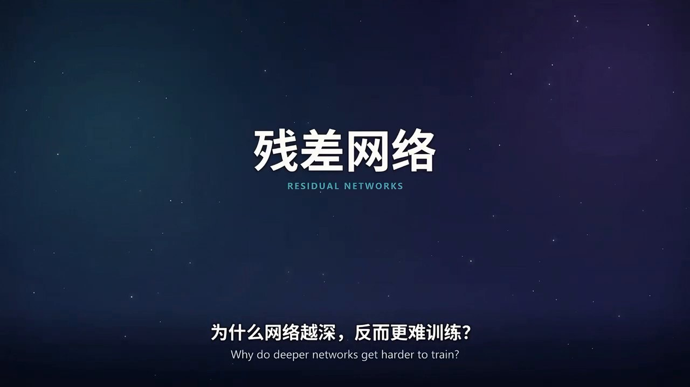

退化现象
Деградация更深的普通网络，训练误差反而可能更高。这不是过拟合，而是优化本身变难了。
У более глубоких обычных сетей ошибка на обучающей выборке иногда выше. Это не переобучение, а трудность оптимизации.
静态科普视频库 · 中俄双语
Сложная наука — за 88 секунд.
每部短片只讲清一个概念：先用一分半看完动画，再读中文与俄语解释，最后拿走生成它的完整提示词。 Один фильм — одна ясная идея: посмотрите анимацию, прочитайте объяснение на китайском и русском и заберите готовый промпт.

残差网络常被简化成「加深就能更强」。这三张卡片说的是它真正的三个支点。 ResNet часто сводят к «просто глубже». На деле всё держится на трёх идеях.
更深的普通网络，训练误差反而可能更高。这不是过拟合，而是优化本身变难了。
У более глубоких обычных сетей ошибка на обучающей выборке иногда выше. Это не переобучение, а трудность оптимизации.
输入 x 直接绕到输出端，网络只学「要改哪里」：z = x + F(x)。
Вход x идёт в обход слоёв, а сеть учит только поправку F(x): z = x + F(x).
反向传播时，捷径给梯度一条更短的路，深层网络因此更容易训练。
При обратном распространении обходное соединение даёт градиенту более короткий путь, и глубокую сеть проще обучать.
提示词不是文案，而是一份可复现的制作说明：时长、分镜、配色、科学护栏、编码参数与验收清单。 Промпт — это воспроизводимое ТЗ, а не текст для озвучки.
# 任务：制作《残差网络》90 秒无配音科普动画
请直接制作并渲染出完整成片，不要只返回脚本、方案或分镜表。
**主题**：《残差网络：让更深的网络学得动》
**英文副标题**：Residual Networks — Learning the Difference
**受众**：没有深度学习背景的普通观众
**核心问题**：网络越深，为什么反而更难训练？残差连接到底解决了什么？
## 一、硬性输出要求
1. 成片恰好 90.000 秒，绝不能超过；1920×1080、16:9、30fps，共 2700 帧。
2. 全程无配音、无旁白、无 TTS、无人声，MP4 不含音轨。
3. 底部常驻中英双语字幕：中文在上、英文在下。
4. 全部画面程序化生成：不使用外部图片、素材库、AI 生图。
5. 每一帧都由代码按时间 t 计算出来，同一个 t 必须得到同一帧。每个条目都配一个概念页与一份提示词；新片按同一套结构追加。 Каждый выпуск — фильм, статья и промпт. Новые добавляются по той же схеме.